With the increase in population and the number of vehicles on the road, Indiana has seen a rapid increase in the number of accidents. Though the state is less crowded when compared to other states like Newyork, Illinois etc., the vehicle crashes reported in Indiana are not less. Federal and state government reports tell us that there were 205,532 motor vehicle accidents in Indiana in 2014 that caused injury or property damage, and 821 fatal traffic accidents in Indiana in 2015, of which 178 involved drunk driving(Craig, Kelley & Faultless LLC, 2017). This drives our interest to study more about the vehicle crashes reported in Indiana and analyze the leading causes along with other contributing factors.
Road safety by any means is a critical issue in everyone’s daily life. Therefore, it is very important to look at the past collision history data and see what we can learn from the data to help better prevent and/ or avoid collisions in the future. This interesting concept motivated us to take this project. Our goal for this project is to create visualizations that help the city and county administrators to identify the cause and impacts for collisions and come up with policies, strategies, and programs to reduce accidents.
The ARIES (Automated Reporting Information Exchange System) is maintained by the Indiana State Police to collect all the
crash reports created by the responding officers from various police departments. This data is available to the general public
through the Indiana MPH (Management Performance Hub) website. Currently the MPH has data for 11 years (2007 to 2017). As part of
our data vislization efforts, we have selected the data from 2017.
The repository has 761149 records for the year 2017. However, this is not the total number of accidents, this number represents
the total number of individuals who were impacted by the accidents. As the number was very high, we decided to base our visualization
on a month’s worth of data and we selected the data for December 2017. The dataset had 73414 records for the month of December 2017
and it has 106 attributes. Some of the attributes are descriptions of other attributes in the same row. These attributes capture information
like the time of accident, location of accident, number of vehicles involved, incident reported time, first responder arrival time,
weather conditions, light conditions , cause of accident etc.
Some of the major attributes we used for the analysis process is below:
Attribute Description Data Type
INDEXING_NUMBER Value created by concatenating the INDIVIDUAL_MR_RECORD value and the PERSONNMB value. Number
INDIVIDUAL_MR_RECORD Unique identifier for each collision. Number
AGENCYORITXT Originating Agency Identifier Number for the police officer's agency. Character
AGENCYORIDESCR Originating Agency Identifier Description for the police officer's agency. Character
COUNTYCDE Three-digit code indicating County where collision occurred. Number
COUNTY_STATE Two-digit number indicating the number of the county in Indiana where the collision occurred. Number
COUNTYDESCR Name of the county in Indiana where the collision occurred. Character
CITYCDE Five-digit code indicating the City where collision occurred or nearest city in the county where the collision occurred. Number
CITYDESCR Name of the City where collision occurred or nearest city in the county where the collision occurred. Character
COLLDTE Date the collision occurred. Date
COLLISION_DAY Full name for Day of the week that the collision occurred. Character
COLLISION_MONTH Three-letter abbreviation for the Month that the collision occurred. Character
COLLISION_YEAR Four-digit year (YYYY) that the collision occurred. Character
COLLISION_TIME Time that the collision occurred (HH:SS 0-12 hours). Date Time
COLLISION_TIME_AM_PM Two-digit code indicating whether the collision occurred in the AM or PM. Character
LIGHTCONDCDE Two-digit code indicating the light conditions at the time and place of the collision. Character
LIGHTCONDDESCR Descriptoin indicating the light conditions at the time and place of the collision. Character
WEATHERCDE Two-digit code indicating the primary atmospheric condition at the time and place of the collision. Character
WEATHERDESCR Description indicating the primary atmospheric condition at the time and place of the collision. Character
SURFACETYPECDE_CONDDESCR Description indicating the road surface conditions at the time and place of the collision. Character
SURFACETYPECDE Two-digit code indicating the type of roadway surface at the scene of the collision. Character
SURFACETYPEDESCR Description indicating the type of roadway surface at the scene of the collision. Character
PRIMARYFACTORCDE Two-digit code indicating the primary cause of the collision. Character
PRIMARYFACTORDESCR Description indicating the primary cause of the collision. Character
TIMENOTIFIEDTXT Time the investigating officer was notified of the collision (HH:SS 0-12 hours). Date
TIMENOTIFIEDAMPMTXT Two-digit code indicating whether investigating officer was notified of the collision in the AM or PM. Character
TIMEARRIVEDTXT Time the investigating officer arrived at the collision (HH:SS 0-12 hours). Date
TIMEARRIVEDAMPMTXT Two-digit code indicating whether investigating officer arrived at the collision in the AM or PM. Character
UNIT_VEHICLE_NUMBER Unique nine-digit State Repository Unique Identifier number indicating the collision with which the vehicle is associated . Character
UNITTYPECDE Two-digit code indicating the type of vehicle involved in the collision. Character
UNITTYPEDESCR Description indicating the type of vehicle involved in the collision. Character
VEHYEARTXT Four-digit year (YYYY) indicating the model year of the vehicle. Number
VEHMAKETXT Description indicating the name of the manufacturer of the vehicle. Character
VEHMODELTXT Description indicating the name of the model of the vehicle. Character
We loaded the selected dataset into a table in the MySQL database installed on our local machines. Of the 106 attributes, not all fields
were filled in by all officers and some of the fields were completely blank or unusable.
As part of our efforts to split the data into multiple smaller files to be used as inputs to various individual visualizations,
we first tried to generate CSV and JSON files and read them in our scripts using D3 functions. This approach worked for the questions
related to weather conditions, the performance of police departments and the vehicle make and model, however, this approach was not feasible
to be used along with the interactions we planned for answering the most number of accidents in each county by weekday and hour of the day.
So, we tried using the nest function in D3 to aggregate the number of accidents by county and at the same time, use the same dataset
to create other interactions, however, the time it required to compute aggregates using nest was not feasible for quick interactions.
So, we moved on to CrossFilter, where we were able to build dimensions on the dataset and use different dimensions in different visualizations
and aggregate data using the group functions available in CrossFilter.
In order to start with the designing, we did research to gather more ideas such as use of color, shapes, orientations etc. After analyzing the overall data available, we discussed the most appropriate visualizations we could use based on the scope of the data.
Evaluating the various suggestions came out of the discussion, we finally decided to represent the number of accidents on a choropleth map of Indiana.
As the data deals with various counties, a choropleth map would be best to show the exact location of various counties and the divergent colors from
light blue to red would appropriately represent the number of accidents reported in each county.
The initial form of the map we created is shown in the figure below:
| 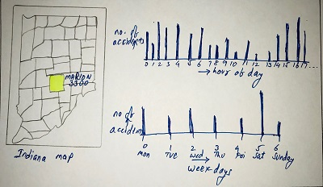 Indiana Map and Bar charts |
The above choropleth map along with the two bar charts would appropriately represent the number of accidents in each county, each day of the week and during each hour of the day. This would also help in an easy interaction between the bar charts and the map.
| 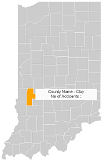 Initial Map without Choropleth |
After using the data and D3 code, we were able to generate the map as below.
| 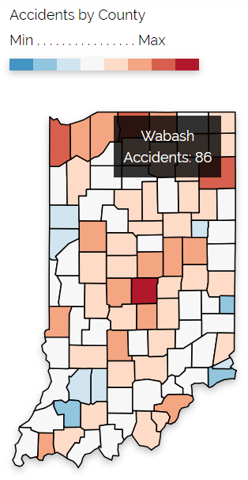 Indiana map with color coding |
The below bar charts represent the number of accidents by each hour of the day and each day of the week.
| 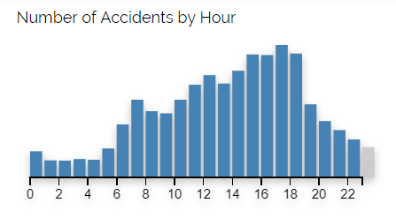 Accidents by hour of day |
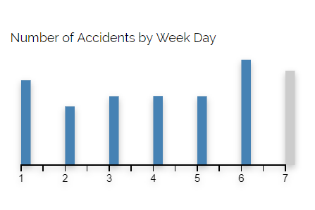 Accidents by day of week |
Bar Charts would be a good tool to reprasent the number of accidents by hour and day though this is timeseries data, as the span of data is very small and a slider selector can be easily implemented.
| 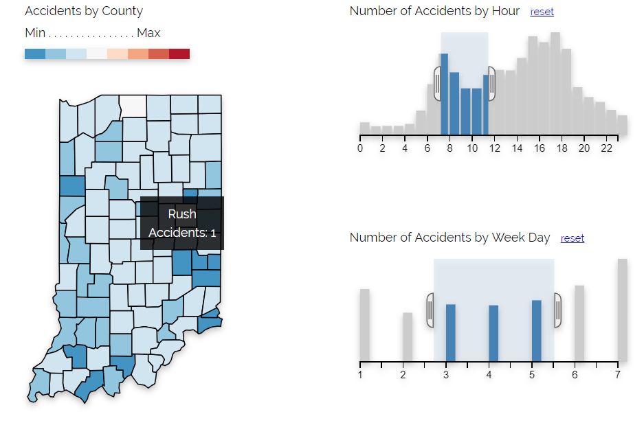 Interaction demonstration |
The above image represents the interaction between the bar graphs and the choropleth map. By selecting Tuesday, Wednesday and Thursday between the hours of 7 and 11 AM,
we can observe that counties in east central counties and south west counties reported more accidents.
Inorder to represent the various factors that caused the accidents, we first choose a pie chart.
Evaluating factors such as surface, weather and light along with other primary factors
had to be represented in
four different pie charts. The initial rough sketch is shown below:
Various pie charts representing different contributing factors
Later we found donut charts to be appropriate to represent different factors and to control them using a checkbox so that space utilization can be efficient. Each slice of the donut chart shows the percentage each factor contributing to the number of accidents in Indiana. Each slice is represented in different color and size of the slice is based on the percentage contributed by each factor. The mouse over on each slice of the chart enables a tool tip at the center of the donut in the same color of the slice, showing the number of accidents and its percentage.
| 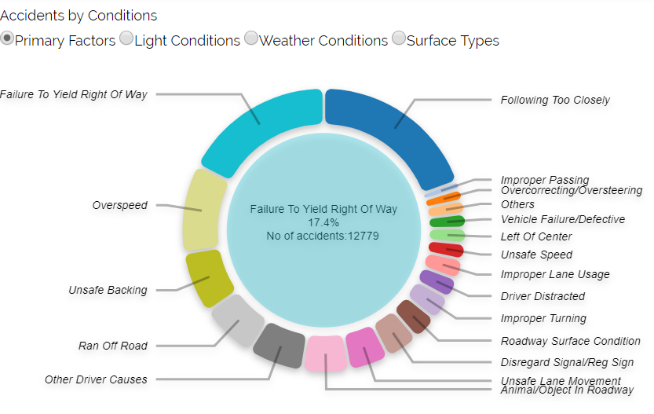 Fig8. |
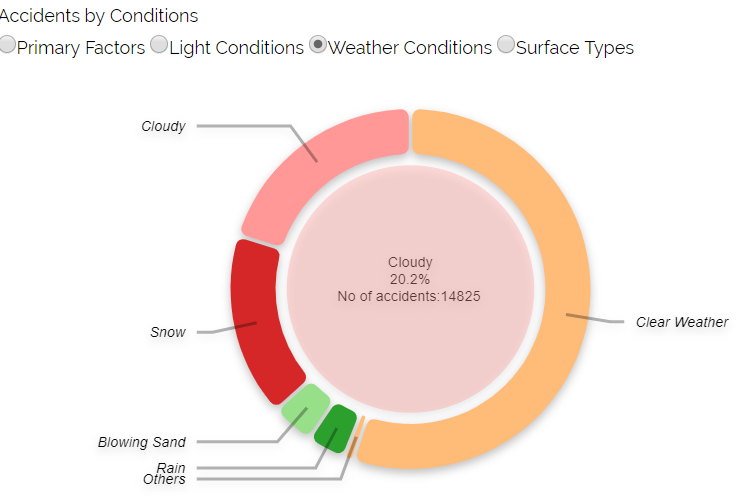 Fig9. |
| 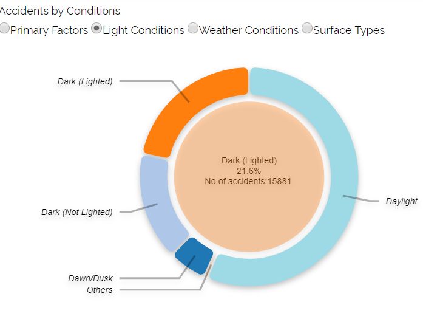 Fig10. |
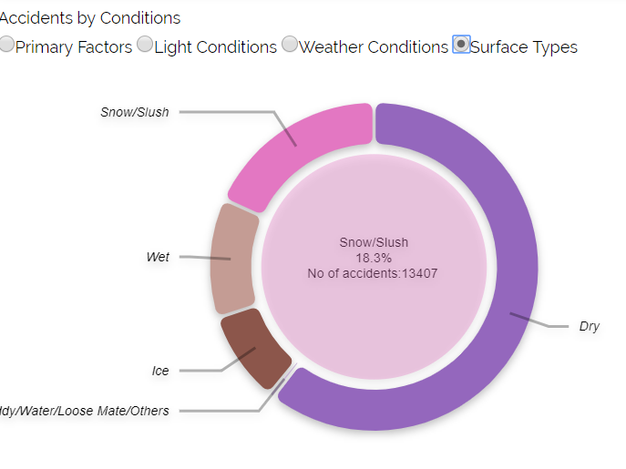 Fig11. |
In order to visualize the response time of each police department, we chose a scatter plot with x axis representing the no. of accidents reported in each police department and y axis representing the average response time in minutes. The scattered dots in different colors are plotted based on no. of accidents and response time of each PD. The mouse over function on each scatter plot highlights the selected dot, showing a tool tip with details such as PD name, accidents reported, response time and the county where the PD is functioning in, and a click on a dot gives details on a table, as shown below:
| 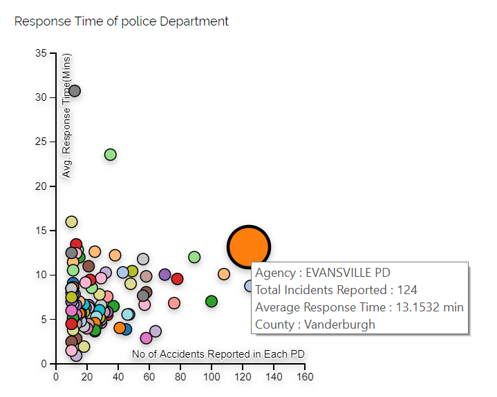 Fig12. |
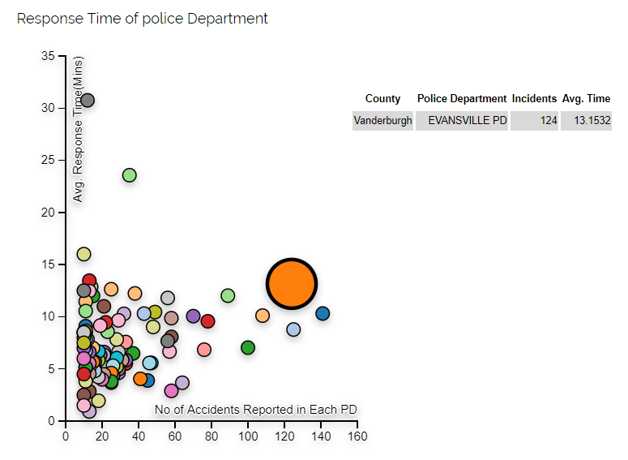 Fig13. |
There is a lasso function that enables the user to select multiple dots together to get the details related to all the selected dots on a table beside the scatter.
| 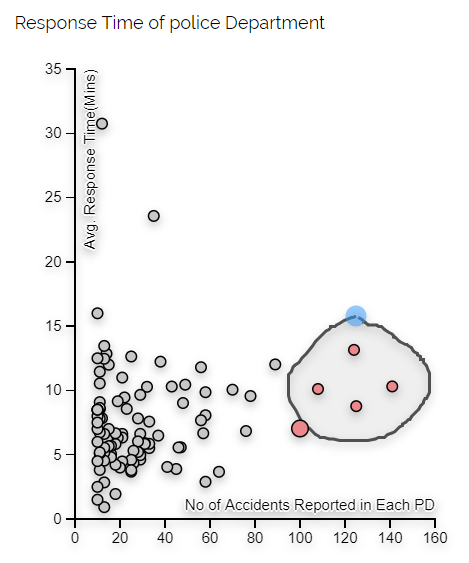 Fig14. |
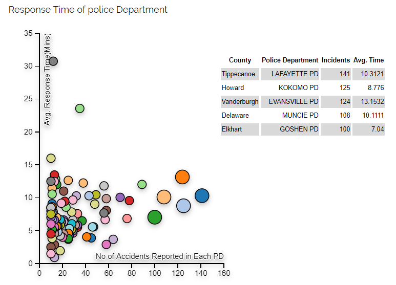 Fig15. |
The make and model of vehicles involved in crashes can be demonstrated well using a packed circle, with an option to zoom into each make
and see the count of vehicles by model.
This approach will enable the user of the visualization to compare the size of circles with other circles and compare the counts across different makes.
| 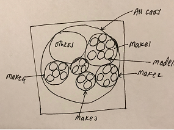 Packed Circle |
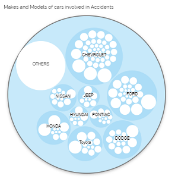 Packed Circle Output |
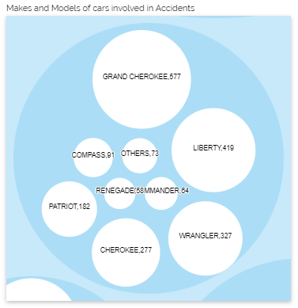 Selected Make - Jeep |
Our initial plan was to place each of the visualizations on separate pages with a navigation from the main page. Later, we realized that it would be better to place all visualizations on a single page that make the analysis and interactions easier for the user. We created an overall design layout such that all the plots will be visible on a single page without requiring any page change or scrolling.
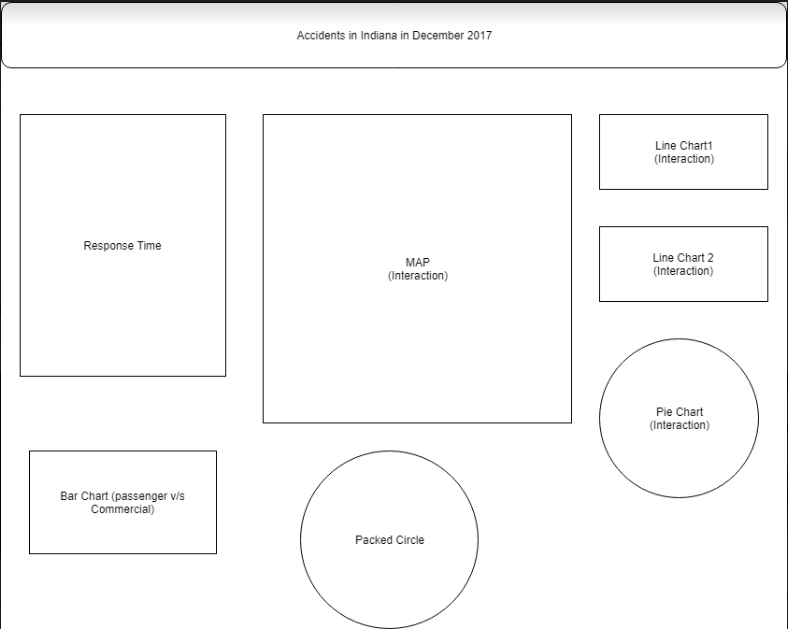Visualization Placements
The map is placed at the top center so that other plots can be placed on both sides of the map to interact with the map.
The donut chart and bar charts are placed on the left and right sides of the map as these three plots represent the number of accidents in different aspects.
The scatter plot and packed circle are placed in the second row since they represent concepts that are not really related to the number of accidents.
This would lead the user to view the initial view about the count of accidents by county, day and hour and the cause of these accidents can be seen at a time.
The donut chart best fits the limited space and it is placed on top left corner beside the choropleth with the intention to make the interaction between donut chart and choropleth easier. Since check points are used to switch between different donut charts, space efficiency is maximized. The decision to place the tool tip inside the center portion of donut chart has helped saving more space and made the interaction more easier and visible.
The packed circle visualization representing the number of vehicles by make and model presents a different dimension of data from the once represented in the map and the donut charts. Hence, it makes sense to have this visualization away from the other visualizations to allow the user to interact easily.
The scatter plot with selection function has been placed at the bottom right as the lasso function produces a table display.
The lasso selection is used instead of squared brush selection as it gives more freedom of selection to the user.
The table is displayed on the right side of the scatterplot so that user won't get confused.
Also, the rows in the table are separated with two color varients to improve the readability.
Based on our visualization we have come to the conclusion that Marion County had the most number of accidents reported in the month
of December 2017, followed by Lake, Allen, and St. Joseph Counties. The population of Marion County is about 1 million, so it is not surprising
to know that there were about 3351 accidents reported, however St. Joseph County which has 10% less population that Hamilton, reported 25%
more incidents than Hamilton. This can be explained by the fact that a major highway between Chicago and Detroit passes through this county
and the impact of lake effect snow in this county is very high, this was further confirmed by the fact that most of the accidents reported
here were during snowy conditions.
Contrary to the popular belief, most accidents happened during clear weather conditions.
Reports shows that DEC 2017 had less snow days and we believe this can be the reason for less number of snow accidents than expected.
The most common cause of an accident was following too closely and
failure to yield the right of way. These situations can be easily averted if drivers follow safe driving tactics. Also when considering the light,
weather and surface conditions contributing to the accidents, most of the accidents happened during daytime, in dry surface and on clear weather.
The second most common conditions for accidents are snow, dark light condition, and cloudy weather.
When it comes to the performance of various police departments, it was observed that the most of the police departments responded within
an average time of 5 to 10 minutes, however the Hendricks County School District took about 30 minutes on average to respond to incidents
though they had only 12 incidents. It was also observed that the number of incidents being reported didn't adversely impact the response time
of first responders.
From the analysis of the vehicles involved in the crashes, we observed that Chevrolet and Ford's vehicles were the top two vehicle makes
involved in crashes, which doesn't mean that these vehicles are more accident prone as we don't have data on the proportion of vehicles sold
by each manufacturer.
Due to lack of time, we could not completely integrate all the visualizations and create interactions. Which would have resulted in better
understanding of the various causes of the accidents.
Development of the visualization to view the crash data for the state of Indiana for December 2017 was a learning experience.
This was the first time, we had to decide on the visualizations based on the data we selected and plan the whole visualization.
The first hurdle was to select the dataset, which we could easily understand and build visualizations for. Once we selected the
dataset, the next hurdle was to decide the scope of the dataset, which we could use.
Once we decided on our dataset, the next big question was to decide on the various visualizations to use and the types of interactions
we could implement. Now, we understand that starting early and building a dummy plot of the visualization with planned visualizations give
us an understanding of how the visualization would look.
Building a coloured dummy visualization would give an even better understanding of how the output would look like.
Preplanning the layout of the visualizations would have allowed us to easily place the various objects using div in HTML.
Once we decided on which objects to use and where to place, the next challenge was to read the data and come-up with an approach which would
enable us to read the data quickly, so that the interactions could be done without lag. During this process, we tried multiple options to split the
original dataset which was for one whole year and used the trial version of Informatica Cloud Integration service. Then we used various D3 functions
and finally used the crossfilter functions to extract the data.
Finally, to come up with various visualizations and interactions, we referred to multiple visualizations, which made us understand the perspectives
of various experienced developers who built some very useful and meaningful visualizations.
Scott Murray, March 2013.Interactive Data Visualization for the Web with D3 http://chimera.labs.oreilly.com/books/1230000000345/index.html
Colororacle http://colororacle.org
StackOverFlow https://stackoverflow.com
Bl.Ocks https://bl.ocks.org
Website Design https://www.w3schools.com/w3css/w3css_templates.asp
D3 coding https://bl.ocks.org/mbostock
D3 coding https://d3js.org/